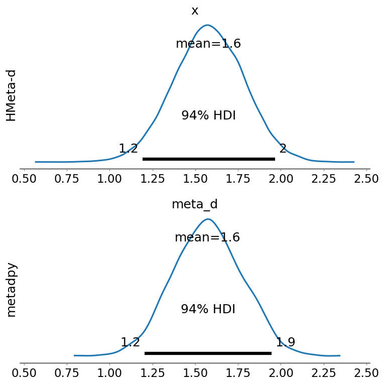

Single subject#
Author: Nicolas Legrand nicolas.legrand@cfin.au.dk
Adapted from the tutorial proposed by the HMeta-d toolbox: https://github.com/metacoglab/HMeta-d/tree/master/CPC_metacog_tutorial
Show code cell content
%%capture
import sys
if 'google.colab' in sys.modules:
! pip install metadpy
import arviz as az
import matplotlib.pyplot as plt
import numpy as np
import pandas as pd
import seaborn as sns
from metadpy.bayesian import hmetad
sns.set_context("talk")
# Create responses data
nR_S1 = np.array([52, 32, 35, 37, 26, 12, 4, 2])
nR_S2 = np.array([2, 5, 15, 22, 33, 38, 40, 45])
Using metadpy#
model, traces = hmetad(nR_S1=nR_S1, nR_S2=nR_S2)
WARNING (pytensor.tensor.blas): Using NumPy C-API based implementation for BLAS functions.
Auto-assigning NUTS sampler...
Initializing NUTS using jitter+adapt_diag...
Multiprocess sampling (4 chains in 2 jobs)
NUTS: [c1, d1, meta_d, cS1_hn, cS2_hn]
100.00% [8000/8000 00:18<00:00 Sampling 4 chains, 0 divergences]
Sampling 4 chains for 1_000 tune and 1_000 draw iterations (4_000 + 4_000 draws total) took 19 seconds.
The rhat statistic is larger than 1.01 for some parameters. This indicates problems during sampling. See https://arxiv.org/abs/1903.08008 for details
The effective sample size per chain is smaller than 100 for some parameters. A higher number is needed for reliable rhat and ess computation. See https://arxiv.org/abs/1903.08008 for details
Using HMeta-d#
The results were generated by the example_metad_indiv.R file.
hmetad_df = pd.read_csv("./hmetad/metad_indiv.txt", sep="\t")
Comparison#
_, axs = plt.subplots(2, 1, figsize=(8, 8), sharex=True)
az.plot_posterior(hmetad_df.meta_d.to_numpy(), ax=axs[0])
az.plot_posterior(traces, var_names=["meta_d"], ax=axs[1])
axs[0].set_ylabel("HMeta-d")
axs[1].set_ylabel("metadpy")
plt.tight_layout()
